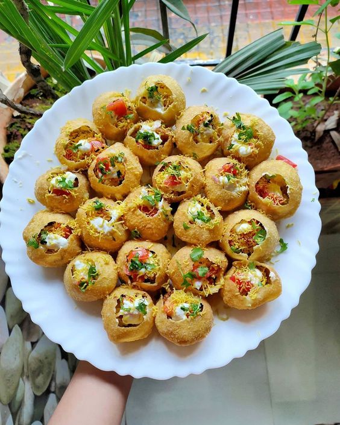
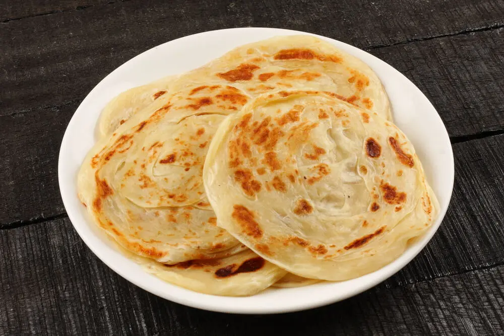
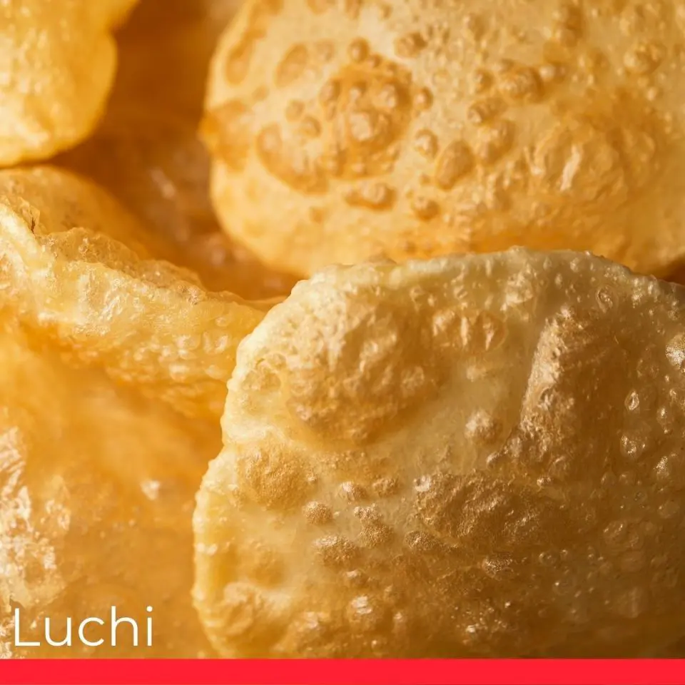
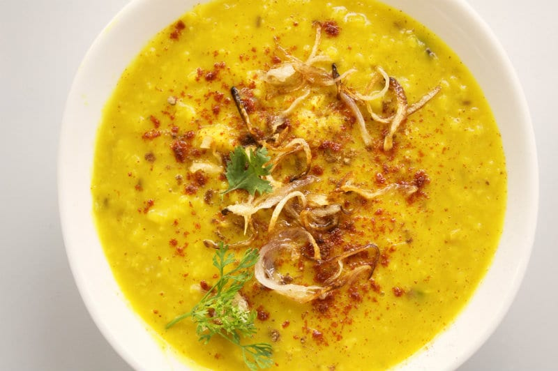
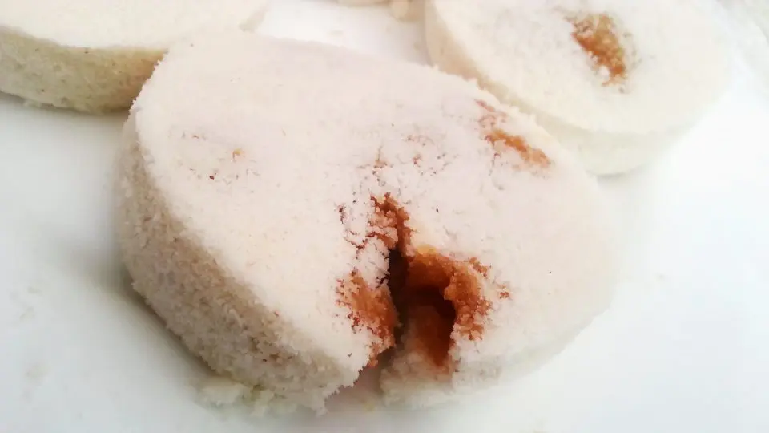

Almost every restaurant in Bangladesh serves this dish, and more than 50,000 grilled chickens are
sold every day
throughout the country. There are different ways of grilling chicken and there are many variations
of spices that are
used. Many restaurants roast chickens in a glass oven placed outside to entice people in to eat.
It’s a very successful
strategy.
Now, it is mostly eaten with Naan Roti. Naan Roti is an oven-baked leavened flatbread—the perfect
food with chicken. The
bread is a little sweet while the chicken is spicy. This combination creates a fabulous wild taste
in your mouth.
2. Panta Ilish:
Panta Ilish is a traditional food that almost every Bangladeshi eats at the Pohela Boishakh Festival
(the first day of
Bangla year). It’s the most popular food in Bangladesh. We love this dish as it is a great symbol
and celebration of our
culture and tradition.
It’s a platter of leftover rice soaked in water and served with fried hilsa, achar, and dal. People
eat Panta Ilish in
the morning of Pohela Boishakh and then take part in cultural programs. The flavorful, crispy, and
delicious hilsa fish
served with water-soaked cold rice and spicy bharta presents a combination of salty and chili
tastes. You will love it
after your first mouthful. Another fish, American shad, tastes like hilsa, so you can buy that and
have yourself some
Bengali pleasure.
3. Kacchi Biriyani:
Kacchi Biryani is one of Bangladeshi people’s most loved foods. It is so loved, it is served at most
festivals and
special occasions, such as weddings, picnics, etc. The main ingredients are rice and marinated meat
cooked in lots of spices, giving it its special taste. The spices are
nutmeg, mace, pepper, cloves, cardamom, cinnamon, bay leaves, coriander, mint, ginger, onion,
tomatoes, green chilies,
and garlic. It is sometimes served with a boiled egg and salad. This rich and flavorful dish is
lip-smackingly good.
4. Vuna Khichuri:
Khichuri is a dish made of rice and lentils (dal). Vuna Khichuri (roasted) is cooked with different
ingredients and
spices from normal Khichuri. It’s served with roasted meat and pickle. It’s one of the tastiest and
best loved foods in
Bangladesh. Seasoned with a dash of turmeric and salt and topped with ghee, Khuchuri makes an ideal
lunch or dinner. It’s a comforting food for rainy days, and very popular at family get togethers.
5. Morog Polao:
Polao is a rice dish which involves cooking a stock, and adding spices. Other varieties of this
delicious,
mouth-watering food are Morog Polao or Chicken Polao, which is Polao served with chicken. Polao and
biryani are cooked with the same rice but they taste different because of the different variety of
spices
used. But when you are eating Morog Polao, you know you are not eating something ordinary. It has
the taste of royalty,
and is often eaten at celebrations and other special occasions.
6. Haleem:
Haleem is an Arabic dish. It is a popular stew made with meat—usually beef or mutton—lentils, barley,
and spices. It is
sold on street stalls and in bazaars (markets) as a snack, and making haleem involves a lengthy and
complex process. It
can be served with mint, lemon juice, coriander leaves, fried onions, ginger root, and green
chilies. Haleem is a high-calorie dish, providing protein from the meat and fiber and carbohydrates
from the combinations of grains and pulses. This is quite possibly why the dish is so popular for
breaking fast during Ramadan.
7. Fuchka:
Probably the most loved snack and street food in the whole of Bangladesh is Puchka. It originated in
India but has
become popular in Bangladesh, Pakistan, and Nepal. Puchka is round or ball-shaped deep-fried, crisp
flatbread which is served with mashed potato, dal, chaat masala, onion, and coriander. As soon as
you smell a puchka, you know you are going to have a great taste experience. You get the perfect mix
of cold,
spicy, tart, sweet, and crunch. So popular is it, people will often hang out with friends at
roadside puchka stalls.

8. Mishti Doi:
This is the second most consumed food at festivals and celebrations after biryani. Here, the
tradition of eating
something sweet after a heavy meal is served by Misti Doi. Mishti Doi is fermented sweet dahi,
originating from the Bogra district of Bangladesh. It is mainly made with milk and
sugar, but it differs from plain yoghurt due to the preparation technique. Misti Doi tastes elegant
yet is comforting and sweet. It has a creamy, pudding-like texture with a deep, rich flavor of
dark caramel and a touch of acidity that makes it refreshing.
9. Shingara or Samosa:
This triangle or pyramid-shaped food originated in the middle east and central Asia and later spread
all over the Indian
subcontinent. Bengali people called it Shingara. But in the West it is generally know as samosa.
This tasty snack is a
fried or baked pastry filled with combinations of spiced potatoes, onions, peas, cheese, beef, and
lentils. It is served
with chutney, salad, or green chili.
Every middle-class restaurant in Bangladesh has Samosas outside their establishment to entice guests
in.
10. Beef Vuna Curry:
A great combination of beef, onion and plenty of spices, such as ginger, garlic, chili, and cumin, go
through a long
process of deep frying to give this dish its black color, as in its name: Kala Bhuna means Black
Deep Fry. It is a
traditional food that originated in the east-south of Bangladesh and became very popular all over
the country due to its
masala taste. This heavy, black dish is served with roti, plain rice, and pulao. It is considered a
delicacy and is served at
weddings, eid, mezban, sehri, and iftar.
11. Porota:
Paratha is not only famous in Bangladesh, it is popular throughout the Indian subcontinent. Paratha
is an amalgamation
of the words parat and atta, which means layers of cooked dough. It is a flaky, healthy, delicious
bread made from wheat
flour, salt, and oil. This breakfast flatbread that is so versatile, it goes with anything and there
are countless
varieties. At breakfast it is served with dal, aloor dum, or mutton curry. But it can also be served
with ghee, honey,
and sugar.

12. Luchi:
This flatbread is deep-fried and requires a specific process to get the perfect round shape that lets
it puff. In
Bangladesh, the perfect sized luchi is called Jamai Babu Luchi. Luchi is made with flour (maida),
oil, salt, and sugar. Luchi can be eaten alone or with any type of sweet or spicy food. But it goes
particularly well with aloor dum and
mutton curry—simple but delicious.

13. Dal:
Dal isn’t unique to Bangladesh but it is so commonly eaten by Bangladeshi’s that it is unequivocally
worth mentioning. Dal is traditionally made by boiling the mix in water with salt and turmeric.
Tomatoes, tamarind or other ingredients
are sometimes added depending on taste, and then adding spices such as cumin, chili, onion, garlic
or mustard seeds, and
garnishing before serving. Naans, rotis, chapatis and other breads traditionally accompany dal, as
well as rice or vegetables.

14. Pitha:
This food differs depending on the season, the culture, and the place. The best time to sample hot
pitha is during
winter, particularly in rural areas on a winter morning, but it is eaten all year round. Pitha is a
light snack made
from dough or batter that is fried, steamed or baked. Bangladeshi cooks use their amazing skills to
create beautiful
designs with this food.
There are many varieties of traditional sweet pitha: Vapa pitha, Puli pitha, Pagan pitha, etc, and
making them requires
a lot of skill.

15. Shemai:
Shemai is a traditional dessert in Bangladesh. It is particularly popular at Eid, a celebration for
the distribution of
Happiness. But shemai is also consumed throughout the year. This dessert symbolizes happy moments in
the family, in society, or on any occasion. It is a sweet dessert made from
milk, ghee, sugar, roasted vermicelli, and various assortments of nuts and spices. Although shemai
is popular in
Bangladesh, it is not a restaurant or street food; it is generally seen as a food for the family to
enjoy.